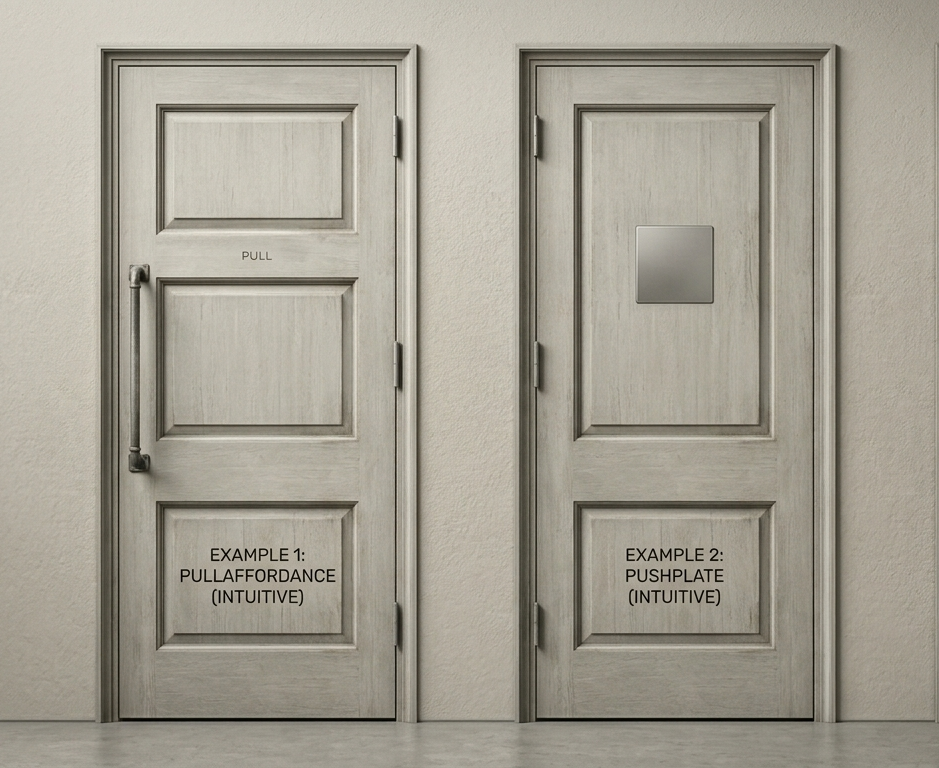

Don Norman
Learn about one of the most influential figures of product design.

A "Norman door" is a door whose design tells you to do the opposite of what you're actually supposed to do. A door that requires a sign stating "Push" or "Pull" is a failure of design. It lacks clear affordances and signifiers.
This concept extends far beyond architecture. It applies to software interfaces, physical tools, and consumer electronics. When a user feels stupid for not knowing how to operate a device, the fault almost always lies with the designer, not the user.
Norman describes two "gulfs" a user must cross to successfully interact with an object or system. These gulfs represent the distance between the user's mental model and the designer's intent — and bridging them is the core challenge of design.
01
Figuring out how something operates. Can the user determine what actions are possible? When this gulf is wide, users feel lost before they even begin — unsure of what buttons to press, what controls to use, or what sequence to follow.
02
Figuring out what happened after you operated it. Did the system provide feedback that the action was successful? Without clear evaluation cues, users repeat actions unnecessarily, wondering if anything happened at all.
"Good design is actually a lot harder to notice than poor design, in part because good designs fit our needs so well that the design is invisible."— Donald Norman, The Design of Everyday Things
Why We Feature His Work
Donald Norman is a renowned cognitive scientist and the pioneer of Human-Centered Design (HCD), an approach that starts with a deep understanding of people and the needs the design intends to meet.
We feature his work because he established the fundamental truth that design is an act of communication, where a product's physical structure must provide all the clues necessary for its proper operation. His core principles — affordances, constraints, and feedback — provide the "alphabet" for the visual language we champion on this site, helping to bridge the gap between a user's intentions and the machine's requirements.
By exploring his philosophy, both designers and users can learn to prioritize clarity and simplicity, transforming complex gadgets into intuitive objects of use.
Next Module
MAX FRASER